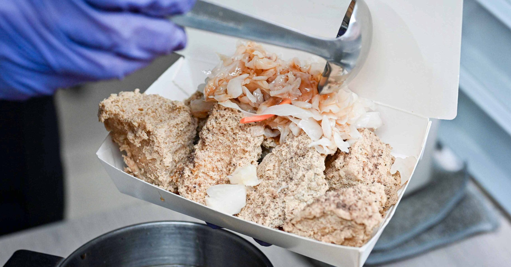

士林｜一派胡塩酵素臭豆腐：外酥內多汁的劍潭站小吃推薦

一句話摘要
如果喜歡外皮酥脆、內裡多汁的臭豆腐，可以把士林夜市附近的《一派胡塩酵素臭豆腐－士林可愛店》列入劍潭站小吃清單；作者特別推薦醬汁分開、再依喜好沾取，並表示加辣更過癮。
店家資訊
- 店名：一派胡塩酵素臭豆腐－士林可愛店
- 地址：台北市士林區大南路 89 之 4 號角間（原文地址的「號號」疑似筆誤，出發前建議用地圖再次確認）
- 電話：原文標示無
- 鄰近捷運：劍潭站
- 營業時間：16:30–22:00
- 公休日：週一
- 位置提示：從豪大大雞排入口進入，店家在旁邊走道，往牛魔王、五豬方向前進；作者提醒位置較隱密，需要找一下。
文章介紹的特色
店家主打酵素臭豆腐，作者表示這種做法在業界相對少見。文章描述店內當時主要販售酥炸臭豆腐，後續可能增加其他品項；菜單與品項價格在來源文章中沒有完整文字整理，實際供應仍應以現場為準。
作者也拍到店家以溫度槍測量油溫，形容整體製作方式偏向理性、科學地掌握炸物火候。
口味與點餐建議
Nash 的實際心得重點如下：
- 外皮非常酥脆，內部多汁，且從頭到尾維持脆口。
- 炸製火候掌握得好，吃起來有甜香與新鮮感，沒有明顯油耗味。
- 表面會撒特製胡椒調味。
- 特製醬汁偏酸甜，建議不要直接淋滿，醬汁分開後依個人口味沾取，更能保留脆皮口感。
- 可以加辣，作者認為風味會更爽快。
- 泡菜在作者心中表現較普通，不是本店最主要的亮點。
- 外帶時醬汁與泡菜分開包裝，對喜歡脆皮的人較友善。
查核與使用提醒
- 本卡整理自 Nash 於 2026-07-17 更新的原始文章，店家地址、營業時間與品項可能隨時間變動。
- 原文地址寫成「大南路89之4號號-角間」，本文將明顯重複字視為疑似筆誤，沒有自行補猜完整門牌。
- 來源文章未提供價格，本文不推定「有點貴」的實際金額。
- 照片為來源文章的代表圖，公開知識庫僅保存來源圖片副本與原始連結，圖片權利仍歸原作者／網站所有。
原始連結
- Nash，神之領域：https://nash.tw/hereweshilinyipai202606/